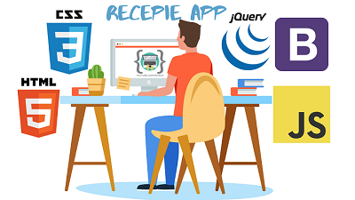

Testimoni
Banyak yang saya pelajari disini dan juga banyak ilmu pastinya yang telah didapat dari desain web tentunya banyak pelajaran dan tentunya skill dalam mata kuliah desweb Contohnya HTML , CSS dan JS juga JQUERY dan bootstrap juga bapak dosennya asik dan sangat friendly juga kita mendapat ilmu juga dari teman Pak totok yang bekerja sebagai Product Designer yang memberikan ilmu yang sangat bermanfaat
Kritik
Mungkin untuk kritik tidak ada karna bapak mengajar dengan jelas dan sangat baik mungkin waktu matkul desweb yang ditambahin pak
Saran
mungkin tips-tips dalam mengerti javascript lebih di kasih lagi pak karna javascript dan JQUERY lumayan banyak yang akan di eksplor jadi perlu tips ekstra pak